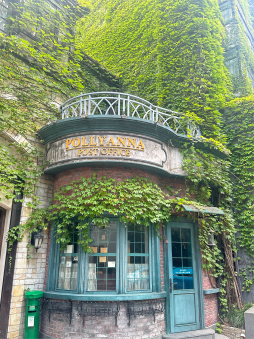
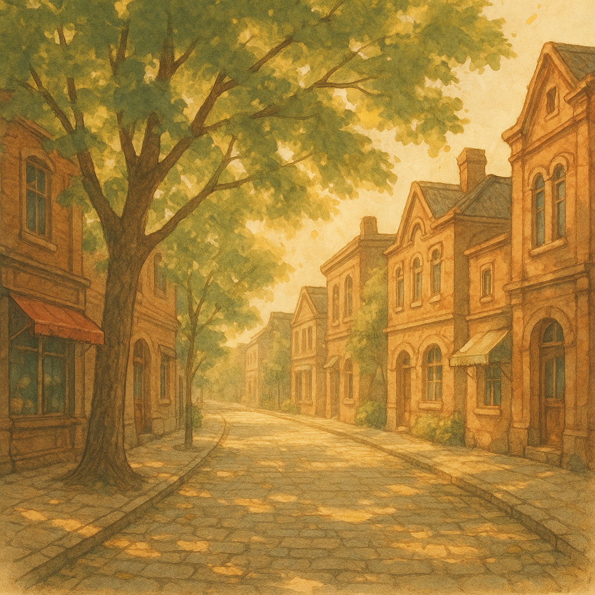

仿造英国街头 怀旧
2025.6，上海的一个文创园
G1 建筑与氛围 → left [S_overlap_F1, S_text_F2]
G2 自然与生态 → right [S_image_F3]
画布: 2130 × 1331 px
规划耗时: 3282.66 ms
OmDet: 2 个检测 (brick wall, building, door, lamp, post office sign, postal sign, window)
S_image_F3 crop: [40,296]-[165,338] 来源=omdet 匹配=brick wall(0.42) 最高分=0.42
S_text_F2 AI生成图片 (耗时 40449.42ms)
S_overlap_F1 crop: [164,219]-[203,333] 来源=omdet 匹配=door(0.66) 最高分=0.66